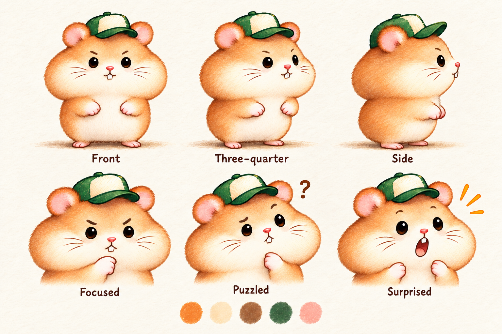

保留这版手绘，先把角色基准定稳
本页围绕已有整页手绘稿校准角色、轮廓、上色、毛发和后续动作制作，作为同一套风格的参照。
角色表是本轮草案，尚待评价。它不是动画，也不代表逐帧一致性已经验证。

与现有稿对照
统一规则
| 造型 | 保留橙白仓鼠、绿色帽子和鼓腮；身体收在腮帮下方。视角和表情变化时，校对头部、眼距、帽沿和身体尺度。 |
|---|---|
| 轮廓 | 保持手绘弧线，以圆润连续的边缘为主，削弱尖毛与一圈锯齿。 |
| 毛发 | 更细、更稀、低对比；用柔和色面表现蓬松感，仍保留原稿的绘本质感。 |
| 上色 | 保留原有橙、奶白、暖棕、暗绿与粉色，以及柔和明暗。角色、道具、背景一起遵循。 |
| 动作 | 固定镜头与背景，先验证同一完整角色的短动作；逐帧核对轮廓、接触与重心，不复用旧拼接造型。 |
下一步的验证顺序
- 以这张角色表和原手绘稿共同校对姿态，确定可沿用的基准。
- 制作一个约2—3秒的抬手/握瓶动作，画清完整轮廓和连续中间姿态。
- 并排核对关键帧，再看实际播放；造型和接触关系过关后才扩展整段故事。